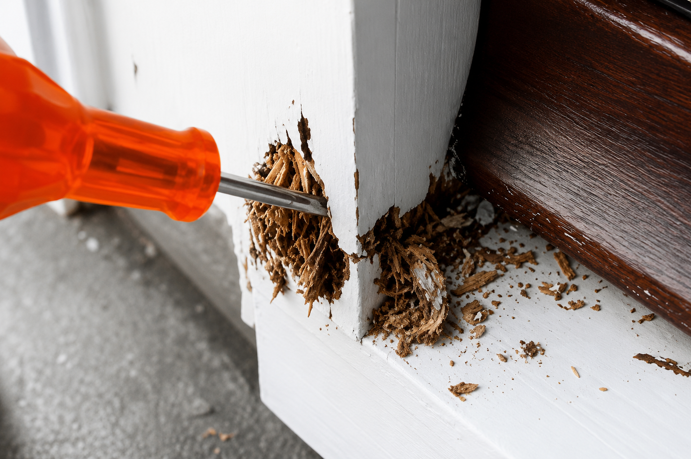
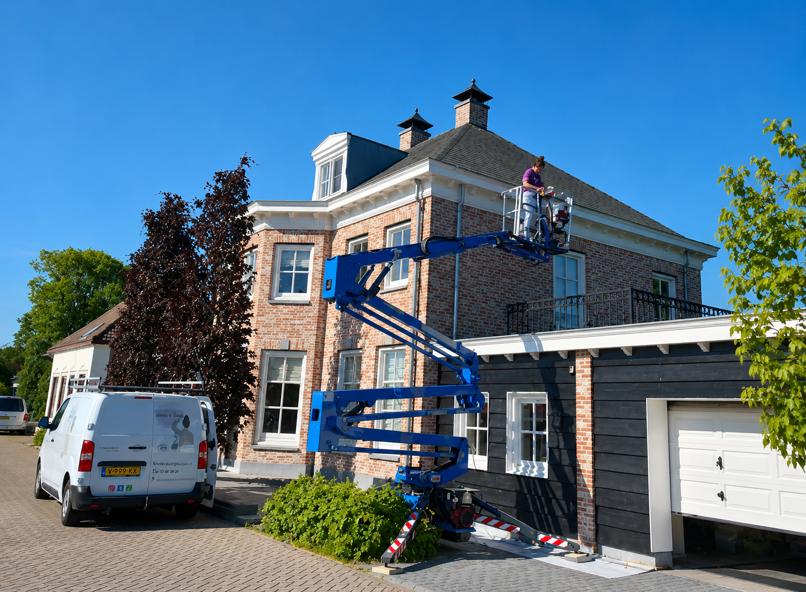
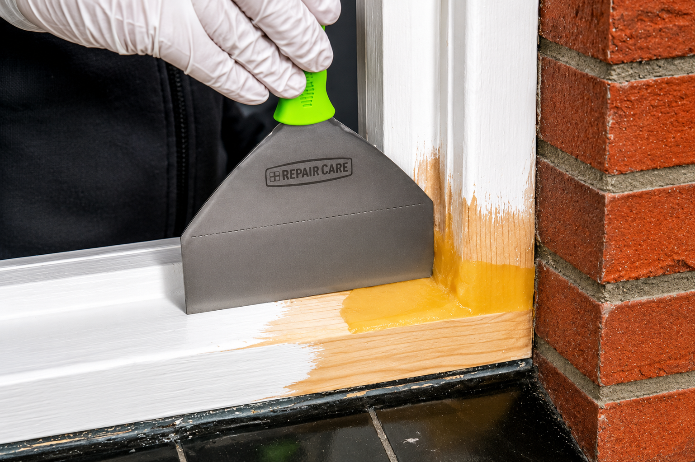
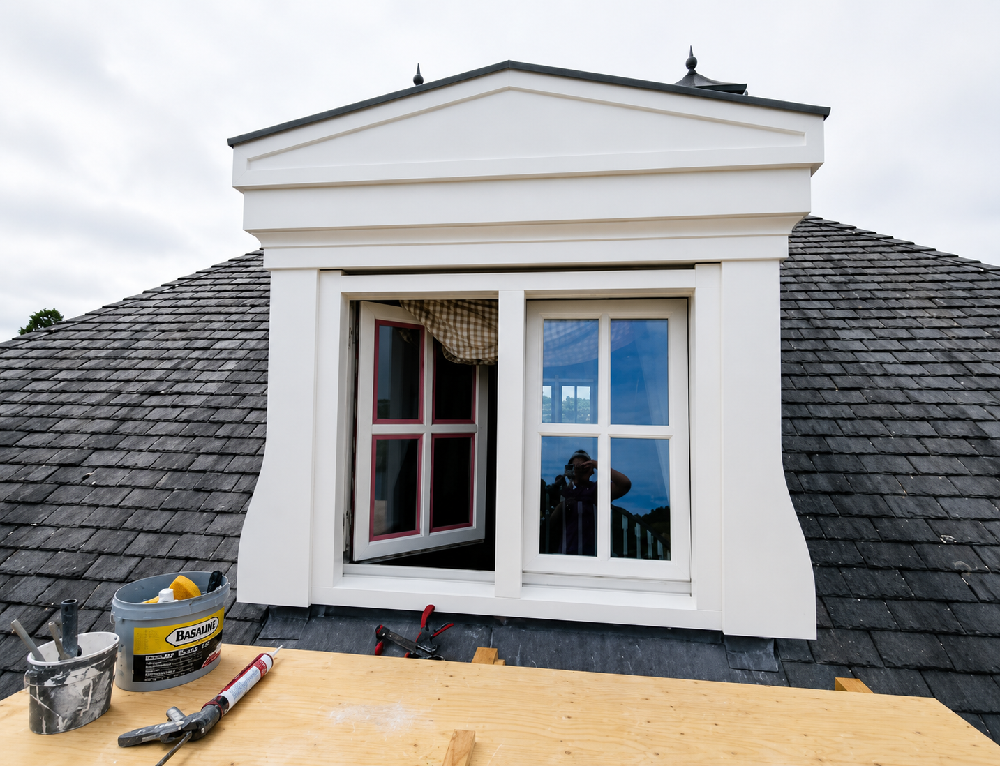
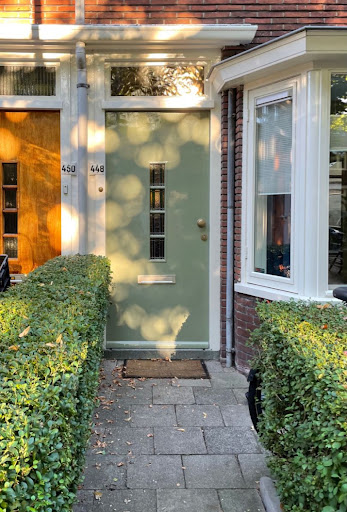
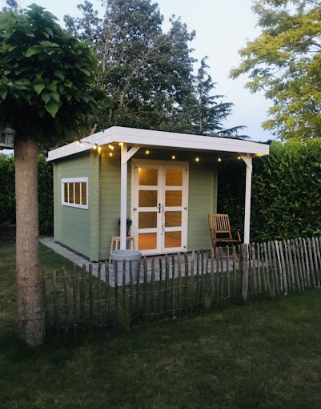
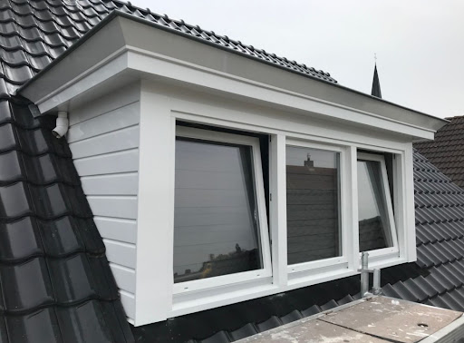
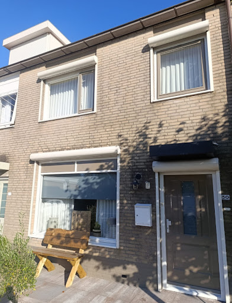
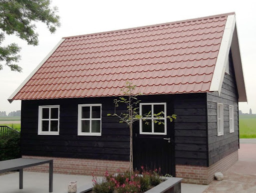
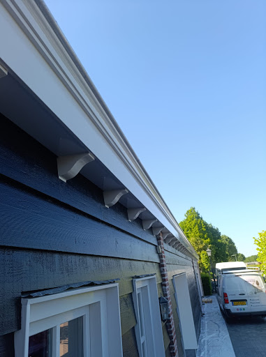

Elevating the
Living Canvas.
Goed buitenschilderwerk is essentieel voor de uitstraling én bescherming van uw woning of bedrijfspand. Door weersinvloeden zoals regen, zon en vorst krijgt het schilderwerk buiten veel te verduren. Met professioneel buitenschilderwerk voorkomt u houtrot, slijtage en dure herstelkosten, terwijl uw pand er weer verzorgd en fris uitziet.

Vakmanschap in Exterieur.
Houtwerk

Wij verzorgen het schilderen en onderhouden van al het buitenhoutwerk, zoals kozijnen, deuren, boeidelen en daklijsten. Door een goede voorbereiding, vakkundige afwerking en het gebruik van hoogwaardige verf zorgen wij voor optimale bescherming tegen weersinvloeden. Zo blijft uw houtwerk langer in goede staat en ziet het er weer strak en verzorgd uit.
Hoogwerker/steiger

Voor werkzaamheden op hoogte draai ik mijn hand niet om. Steigers of een hoogwerker inzetten is voor mij geen probleem. Juist hiermee kunnen ook lastig bereikbare plekken veilig en efficiënt worden geschilderd, zoals hoge gevels, dakkapellen en boeidelen. Door het juiste materieel te gebruiken werk ik nauwkeurig, snel en volgens de geldende veiligheidsnormen. Dit zorgt for een strak eindresultaat and minimale overlast voor u.
Houtrot

Tijdens werkzaamheden aan uw woning of pand kan houtrot aan het licht komen. Dit ontstaat wanneer hout langdurig vochtig blijft. Schimmels tasten het hout aan, waardoor het zacht, broos en minder sterk wordt. Houtrot komt vaak voor bij kozijnen, daklijsten, deuren en andere buitentoepassingen.Tekenen van houtrot zijn zachte plekken, verkleuring en loslatende verf. Om houtrot te voorkomen zijn goed schilderwerk, voldoende ventilatie en het snel verhelpen van vochtproblemen belangrijk. Bij lichte aantasting kan reparatie mogelijk zijn. Dit kan Schildersbedrijf De Visser voor u verzorgen. Bij ernstige houtrot is vervanging meestal nodig en zal er een timmerman moeten worden ingeschakeld. Dit kan uw eigen timmerman zijn, of ik kan voor u contact opnemen met een timmerman uit mijn netwerk.Zo zorgen wij ervoor dat uw schilderwerk er weer strak, verzorgd en in een gezonde staat bij staat.
Houtwerk

Wij verzorgen het schilderen en onderhouden van al het buitenhoutwerk, zoals kozijnen, deuren, boeidelen en daklijsten. Door een goede voorbereiding, vakkundige afwerking en het gebruik van hoogwaardige verf zorgen wij voor optimale bescherming tegen weersinvloeden. Zo blijft uw houtwerk langer in goede staat en ziet het er weer strak en verzorgd uit.






Bent u benieuwd naar de mogelijkheden?
Vraag dan vrijblijvend een offerte aan.
Direct contact opnemen